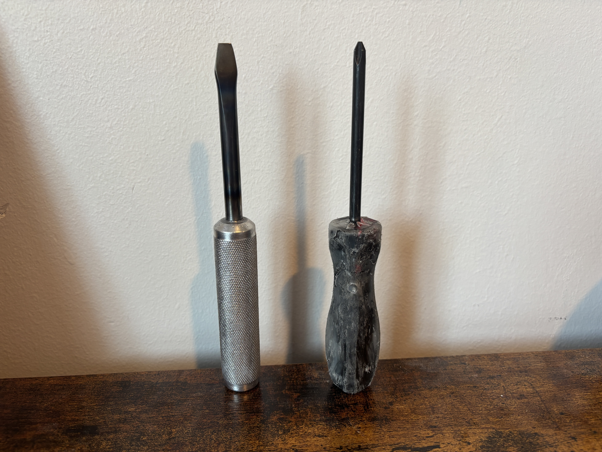

Screw Driver Project

The screwdriver project is a project I did for my MECH 200B lab course. For this project we made a cast aluminum screw driver on a manual and CNC mill with diamond knurling and a heat treated flat head tip. For the finish of the screw driver I sanded the handle to 600 grit and then sandblasted the whole thing. After sandblasting, I ran the screwdriver on the wire wheel which gave it a very unique shiny but textured finish that I am very proud of. We also made an injection molded Philips head screwdriver using the injection molding machine in the EMEC. The project gave me experience in CNC lathe use, knurling, drop forging, and heat treatment.
Lessons Learned
The most challenging part of the screwdriver was shaping the tip into the correct shape within tolerances and properly heat treating. Much like the clock project, I found that by removing small amounts of material from the tip and taking measurements often it was much easier. By doing so, I was slowly approaching the correct dimensions so that I wouldn't overshoot the desired size. The hardest part of heat treatment was getting the metal at the tip to be the right temp. Before attempting to heat treat my part I watched a few of my peers first so that I could see the timing and what correct heat treatment looked like. This technique was very effective and made it so I successfully heat treated my screw driver on my first attempt.


Cost Estimate
The following is the cost estimate for one completed screwdriver set manufactured on manual machines.
| Category | Item / Operation | Quantity / Time | Rate / Unit Cost | Total Cost |
|---|---|---|---|---|
| Material | High Carbon Steel | 1 unit | $1.50 | $1.50 |
| Material | Cast Aluminum Handle | 1 unit | $1.50 | $1.50 |
| Material | Thermoplastic Pellets | 1 unit | $0.50 | $0.50 |
| Material | Phillips Shank | 1 unit | $1.50 | $1.50 |
| Subtotal | Raw Materials | $5.00 | ||
| Labor | Machinist Labor (CO Average) | 3.0 hours | $28.00/hr | $84.00 |
| GRAND TOTAL | Single Unit Production | $89.00 |
Efficiency Improvement Proposal
The manual processes we used in the EMEC lab are great for learning, but if we want to scale up, we need to rethink how we make these parts. For the flathead screwdriver, I would move the steel shank over to a progressive die stamping line and switch the handle to high pressure die casting. For the Phillips screwdriver, I would use a multi cavity injection molding setup so we can pump out multiple handles per cycle instead of one at a time.
The reason these changes matter is speed and consistency. Progressive die stamping lets the material flow through a series of stations that form it automatically, so there is no more hand shaping one piece at a time. Die casting gets us near final shape handles straight out of the mold, which cuts way down on finishing work. And with multi cavity injection molding, we are filling several molds at once per cycle, so the output per hour goes way up while the cost per part drops.
Mass Production Analysis (10,000 Units)
When we look at making 10,000 sets, the whole game changes. Buying steel, aluminum, and plastic in bulk gets us about a 20% discount on materials, bringing it down to around $4.00 per set. Throw in about $1.00 per set for molds, dies, and tooling wear, and the total comes out to roughly $50,000 for the whole run, not counting labor.
The time savings are where it really gets interesting. In the lab, one set took about 3 hours, which means 10,000 sets would take over 30,000 hours by hand. Once we switch to automated die casting and injection molding, the cycle time drops to around 45 seconds per set. That puts the entire production run at about 125 hours of machine time, turning what would have been a prohibitively long manual effort into a few weeks of work.